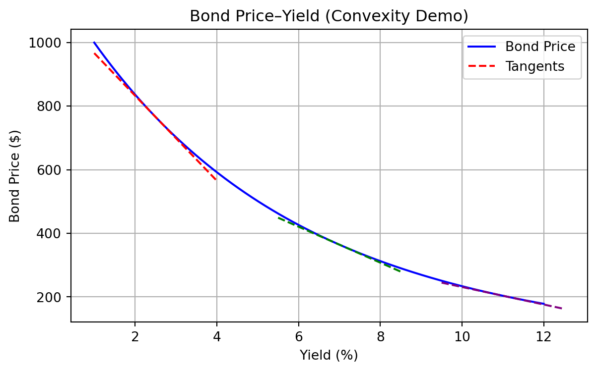
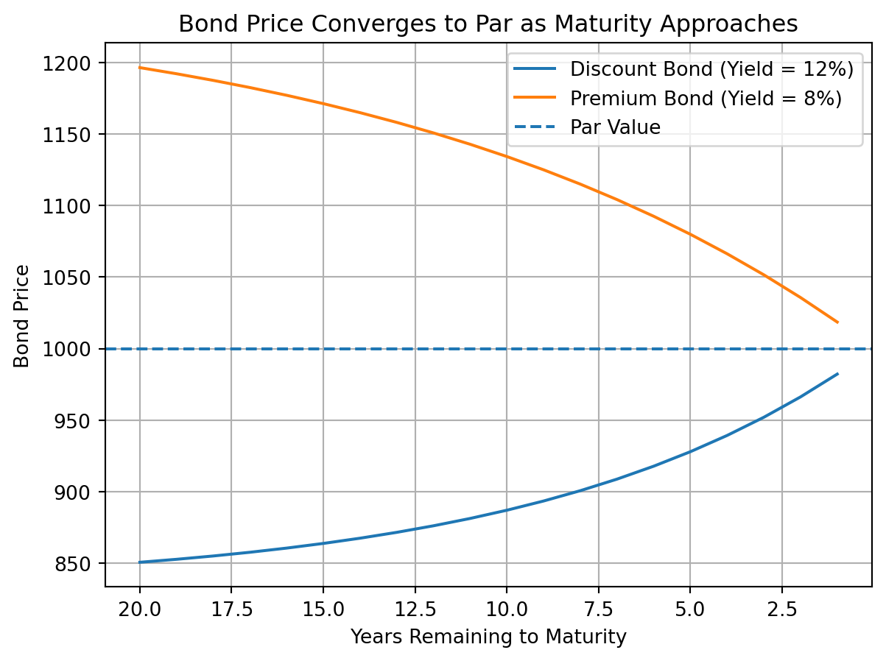

Lecture 2: Bond Pricing and Yield Measures
Learning Objectives
By the end of this lecture you should be able to:
- Explain the time value of money and calculate future values and present values for cash‑flows.
- Compute the price of a bond by discounting expected cash‑flows at an appropriate discount rate.
- Describe how bond prices move in response to changes in yield and why the price–yield relationship is convex.
- Relate coupon rate and yield to a bond’s trading status (par, premium or discount) and recognise how prices evolve as a bond approaches maturity (pull to par).
- Identify factors—market interest rates, credit risk, liquidity, economic expectations, tax policy and inflation—that cause bond prices to change.
- Describe complications in bond pricing arising from embedded options, floating‑rate structures and inverse floaters.
- Explain how bonds are quoted clean and dirty, and compute accrued interest.
- Compute yields using the present‑value relationship: current yield, yield to maturity, yield to call, yield to put, yield to sinker and yield to worst, as well as the yield for a portfolio and the cash‑flow yield for amortising securities.
- Compute the discount margin for a floating‑rate security and explain why this margin differs from conventional yield measures.
- Identify the sources of a bond’s total return—coupon interest, reinvestment income and capital gain or loss—and discuss reinvestment risk.
- Use total return and horizon analysis to evaluate the realised performance of a bond or bond strategy under explicit assumptions about reinvestment rates and future yields.
- Measure changes in yield using absolute (basis‑point) and relative (percentage) conventions.
1 The Time Value of Money
A fundamental principle underlying all fixed income valuation is the time value of money. A dollar received today is worth more than a dollar received in the future because the dollar today can be invested to earn interest. When an investor purchases a bond, the investor is exchanging money today for a stream of future cash flows. To determine whether this exchange is fair, we must be able to compare money received at different points in time. The tool that allows us to do this is present value and future value analysis.
In fixed income markets, virtually every valuation problem can be reduced to one question:
What is the present value of a set of future cash flows?
To answer this question, we must first understand how money grows over time and how future cash flows are discounted back to the present.
1.1 Future Value
Suppose an investor invests an amount \(P_0\) today at an interest rate \(r\) per period. After one period, the investment grows to
\[ P_1 = P_0(1+r). \]
After two periods, the investment grows to
\[ P_2 = P_0(1+r)^2. \]
After \(n\) periods, the investment grows to
\[ P_n = P_0(1+r)^n. \]
This is the future value of the investment. The key idea behind this formula is compound interest: interest earned each period is reinvested and itself earns interest in future periods. In fixed income markets, compounding plays a central role because coupon payments are often reinvested, and the return on a bond depends not only on coupon payments but also on the interest earned on reinvested coupons.
NoteWorked Example
Future Value
Suppose a pension fund invests $10,000,000 at an annual interest rate of 9.2% for 6 years.
\[ P_6 = 10{,}000{,}000(1.092)^6 = 16{,}956{,}500. \]
The investment grows to approximately $16.96 million after six years.
1.2 Future Value of an Ordinary Annuity
An ordinary annuity is a series of equal payments made at the end of each period. Coupon payments on most bonds are an example of an ordinary annuity.
Suppose a payment \(C\) is made at the end of each period for \(n\) periods, and the interest rate is \(r\). The future value of these payments at time \(n\) is
\[ FV = C \left( \frac{(1+r)^n - 1}{r} \right). \]
This formula shows that the future value of an annuity depends on both the number of payments and the interest rate at which the payments are reinvested. This is important in fixed income because the total return from a bond depends heavily on the reinvestment of coupon payments.
NoteWorked Example
Future Value of an Annuity
Suppose an investor receives $100 at the end of each year for 5 years and can reinvest each payment at 6%.
\[ FV = 100 \left( \frac{(1.06)^5 - 1}{0.06} \right) = 100(5.637) = 563.70. \]
The future value of the payments at the end of 5 years is $563.70.
1.3 Present Value
Present value is the reverse of future value. Instead of asking how much an investment today will grow to in the future, we ask:
How much is a future cash flow worth today?
If a payment of \(F\) will be received in \(n\) periods and the interest rate is \(r\), the present value is
\[ PV = \frac{F}{(1+r)^n}. \]
This formula is called discounting, and the interest rate \(r\) is called the discount rate. In fixed income markets, the discount rate reflects the required yield on a bond, which depends on interest rates, credit risk, liquidity, and other factors.
NoteWorked Example
Present Value
Suppose an investor will receive $1,000 in 3 years and the discount rate is 5%.
\[ PV = \frac{1000}{(1.05)^3} = 863.84. \]
The present value of $1,000 received in three years is $863.84.
1.4 Present Value of a Series of Future Cash Flows
Most bonds pay multiple cash flows: periodic coupon payments and the principal at maturity. The present value of a series of future cash flows is simply the sum of the present values of each individual cash flow.
If the cash flows are \(CF_1, CF_2, \dots, CF_n\), then
\[ PV = \sum_{t=1}^{n} \frac{CF_t}{(1+r)^t}. \]
This is the fundamental bond pricing formula. Every bond pricing problem is an application of this equation.
NoteWorked Example
Present Value of Multiple Cash Flows
Suppose a bond pays $60 in one year, $60 in two years, and $1,060 in three years. If the discount rate is 5%:
\[ PV = \frac{60}{1.05} + \frac{60}{1.05^2} + \frac{1060}{1.05^3} = 1026.71. \]
This is the price of the bond.
1.5 Present Value of an Ordinary Annuity
If a bond pays a fixed coupon \(C\) each period for \(n\) periods, the present value of the coupon payments is the present value of an ordinary annuity:
\[ PV = C \left( \frac{1 - (1+r)^{-n}}{r} \right). \]
The price of a bond can therefore be written as
\[ P = C \left( \frac{1 - (1+r)^{-n}}{r} \right) + \frac{F}{(1+r)^n}. \]
This formula shows that a bond is simply the present value of an annuity (coupon payments) plus the present value of a single payment (principal).
1.6 Present Value When Payments Occur More Than Once per Year
In many bond markets, coupon payments are made semiannually, meaning twice per year. Some securities pay quarterly or monthly.
When payments occur more than once per year, we must adjust both the interest rate and the number of periods.
If the annual interest rate is \(r\) and there are \(m\) payments per year, then:
- Interest rate per period = \(\frac{r}{m}\)
- Number of periods = \(n \times m\)
The present value formula becomes
\[ PV = \sum_{t=1}^{nm} \frac{CF_t}{\left(1+\frac{r}{m}\right)^t}. \]
NoteWorked Example
Semiannual Bond Pricing
Suppose a bond pays $80 per year in coupons, paid semiannually, for 5 years. The required yield is 6%.
- Semiannual coupon = $40
- Semiannual yield = 3%
- Number of periods = 10
\[ P = 40 \left( \frac{1 - (1.03)^{-10}}{0.03} \right) + \frac{1000}{(1.03)^{10}}. \]
This gives the price of the bond.
Key Insight
The most important idea in fixed income valuation is:
The price of any fixed income security is the present value of its expected future cash flows discounted at an appropriate discount rate.
2 Pricing a Bond
The price of a bond is equal to the present value of its expected future cash flows. These cash flows consist of periodic coupon payments and the repayment of principal at maturity. Therefore, a bond can be viewed as a financial instrument that converts a series of future payments into a present value.
If a bond has coupon payment \(C\), face value \(F\), maturity \(n\), and required yield \(r\), the price of the bond is
\[ P = \sum_{t=1}^{n} \frac{C}{(1+r)^t} + \frac{F}{(1+r)^n}. \]
This formula shows that bond pricing is simply an application of present value. The required yield used to discount the cash flows reflects market interest rates, credit risk, liquidity, and other factors.
NoteWorked Example
Bond Pricing Example
Suppose a bond has a face value of \(\$1,000\), pays an annual coupon of \(\$50\) \((C=50)\), matures in 3 years, \((n=3)\), and the required yield is \(6/%\), \((r=0.06)\). What is the price of the bond?
First, calculate the present value of each coupon payment and the face value:
\[ \begin{aligned} \text{Price} &= \frac{50}{(1+0.06)^1} + \frac{50}{(1+0.06)^2} + \frac{50}{(1+0.06)^3} + \frac{1000}{(1+0.06)^3} \\ &= \frac{50}{1.06} + \frac{50}{1.1236} + \frac{50}{1.191016} + \frac{1000}{1.191016} \\ &= 47.17 + 44.51 + 42.00 + 839.62 \\ &= \textbf{\$973.30} \end{aligned} \]
So, the bond price is $973.30.
Pricing Zero-Coupon Bonds
A zero-coupon bond makes only one payment at maturity and does not pay periodic coupons. Therefore, its price is simply the present value of the maturity value.
\[ P = \frac{F}{(1+r)^n}. \]
Zero-coupon bonds are particularly useful for understanding the relationship between interest rates and bond prices because there is only one cash flow.
3 Price–Yield Relationship
One of the most important relationships in fixed income markets is the inverse relationship between bond prices and yields. When required yields increase, the present value of future cash flows decreases, and therefore the bond price falls. When required yields decrease, the present value of future cash flows increases, and therefore the bond price rises.
This inverse relationship exists because the bond’s cash flows are fixed while the discount rate changes.
The relationship between bond price and yield is not just inverse and curved—it’s significantly convex. Convexity refers to the “bowed out” shape of the price-yield curve, which becomes even more noticeable for bonds with longer maturities and lower coupons. The greater the convexity, the more rapidly the bond’s price rises as yields fall and the more gently it drops as yields rise. Highly convex bonds are more responsive to changes in yield, offering increasing protection and upside as rates fall.
The graph above demonstrates the inverse and nonlinear (convex) relationship between bond price and yield. As yield increases, bond price falls, and vice versa. Notice the curve bows outward—this is convexity.
4 Relationship Between Coupon Rate, Required Yield, and Price
The relationship between the coupon rate and the required yield determines whether a bond sells at par, at a premium, or at a discount.
| Coupon Rate vs Yield | Bond Price |
|---|---|
| Coupon rate = Yield | Price = Par |
| Coupon rate > Yield | Price > Par (Premium) |
| Coupon rate < Yield | Price < Par (Discount) |
If the coupon rate is higher than the market yield, the bond pays more interest than comparable bonds, so investors are willing to pay more than par. If the coupon rate is lower than the market yield, the bond pays less interest than comparable bonds, so investors will only buy it at a discount.
5 Relationship Between Bond Price and Time if Interest Rates Are Unchanged
If interest rates remain unchanged, the price of a bond will move toward its face value as it approaches maturity. This is known as pull to par.
- A premium bond will decline in price over time.
- A discount bond will increase in price over time.
- A bond selling at par will remain at par.
This occurs because the present value of the principal repayment becomes less sensitive to discounting as the bond approaches maturity.
ImportantTime Path of Bond Price as Maturity Approaches
The figure below shows how the price of a 20-year 10% coupon bond moves toward par as it approaches maturity when market yields remain unchanged. A bond selling at a discount rises toward par, while a bond selling at a premium falls toward par.

6 Reasons for the Change in the Price of a Bond
Bond prices change for several reasons. The most important factor is changes in market interest rates, but other factors also affect bond prices:
- Changes in the level of interest rates
- Changes in credit risk of the issuer
- Changes in liquidity of the bond
- Changes in tax treatment
- Changes in inflation expectations
- Changes in economic conditions
Understanding these factors is essential for fixed income portfolio management because bond prices can change even if interest rates remain constant.
7 Complications in Pricing Bonds
In practice, bond pricing is more complicated than the basic present value formula suggests. Several issues arise in real-world bond pricing.
Next Coupon Payment Due in Less Than Six Months
Bonds often trade between coupon payment dates. When this happens, the buyer must compensate the seller for the interest that has accrued since the last coupon payment. Because the next coupon payment is less than a full period away, the bond must be priced using fractional periods.
Let
\[ v = \frac{\text{days from settlement to next coupon}}{\text{days in coupon period}} \]
Then the price of a bond between coupon dates is
\[ P = \sum_{t=1}^{n} \frac{C}{(1 + r)^{t - 1 + v}} + \frac{M}{(1 + r)^{n - 1 + v}} \]
where:
- \(C\) = coupon payment per period
- \(M\) = maturity (face) value
- \(n\) = number of remaining coupon payments
- \(r\) = yield per period
- \(v\) = fraction of coupon period until next payment
The exponent \(t - 1 + v\) reflects that the next coupon payment occurs in less than one full period, and all remaining cash flows must be discounted accordingly.
This price is called the full price or dirty price of the bond.
The clean price is obtained by subtracting accrued interest:
\[ \text{Clean Price} = \text{Dirty Price} - \text{Accrued Interest} \]
Accrued interest is calculated as
\[ \text{Accrued Interest} = C \times \frac{\text{days since last coupon}}{\text{days in coupon period}}. \]
Cash Flows May Not Be Known
For some bonds, the future cash flows are uncertain. Examples include:
- Callable bonds
- Putable bonds
- Mortgage-backed securities
- Floating-rate securities
In these cases, cash flows depend on future interest rates or borrower behavior.
Determining the Appropriate Required Yield
The required yield depends on several factors:
- Risk-free rate
- Credit risk
- Liquidity risk
- Time to maturity
- Tax considerations
Choosing the correct discount rate is often the most difficult part of bond valuation.
One Discount Rate Applicable to All Cash Flows
The basic bond pricing formula assumes that all cash flows are discounted at the same interest rate. In reality, different cash flows should be discounted using different interest rates based on their maturity. This leads to the concept of the term structure of interest rates, which will be discussed later in the course.
8 Pricing Floating-Rate and Inverse-Floating-Rate Securities
Many bonds do not pay a fixed coupon. Instead, each coupon is tied to a short-term reference rate (for example a Treasury bill rate, SOFR, or—historically—LIBOR) and sometimes to a fixed spread or a formula. The two main structures below are floating-rate notes (floaters) and inverse floaters.
Floating-rate notes (floaters)
What they are. On each reset date, the issuer sets the coupon for the next period as a reference rate plus a fixed margin (spread), e.g.
\[ \text{coupon rate for the period} = \text{reference rate} + \text{margin}. \]
The bond pays that rate on par for that period; at the next reset, the coupon changes again. Caps and floors may limit how high or low the coupon can go.
Why they exist. Borrowers (corporates, banks, governments) use floaters when they prefer funding costs that move with short rates instead of locking in a long-term fixed coupon. Investors use them when they want income that resets with money-market conditions, limiting sensitivity of price to small parallel shifts in the curve right after a reset.
Who uses them. Cash-rich institutions (money managers, corporate treasuries), bank treasury desks, and liability-driven investors often hold floaters as short-duration credit or liquidity instruments; issuers include banks and non-financial corporates.
How they are priced. Conceptually, price is still the present value of expected future cash flows, but those cash flows depend on future reference rates. Right after a coupon reset, if credit risk is unchanged, a plain floater with no unusual options often trades close to par because the next coupon is already aligned with current short rates. Between resets, the accrued value of the current coupon makes the clean price drift slightly away from par. For yield-style measures, practitioners often use a spread over the reference (e.g. discount margin), which is developed later in this lecture in more detail.
What moves the price. Key factors include: changes in the issuer’s credit spread (the margin the market demands over the reference); time to the next reset; the shape of short-rate expectations; liquidity; and any embedded options (caps, floors, call features). A widening credit spread lowers price even if the reference rate is unchanged.
TipIntuition: Why a floater often hugs par
After a reset, the next coupon is set from today’s short rate. If nothing else changes, discounting that near–market coupon at a comparable short discount rate brings value back toward face value—unlike a fixed-rate bond, whose old coupon can be far above or below the market rate.
NoteExample: Quarterly reset
A floater pays quarterly with a margin of 0.40% (40 bp) over 3-month SOFR. If SOFR is 5.00% on the reset date, the coupon for the next quarter is 5.40% annualised (paid according to the day-count convention in the prospectus). If SOFR jumps to 5.50% at the next reset, the following quarter’s coupon becomes 5.90%. The investor’s cash income rises with short rates without needing to sell the bond.
Inverse floating-rate bonds
What they are. An inverse floater pays a coupon that falls when the reference rate rises and rises when it falls. A common pattern is
\[ \text{coupon} = K - a \times \text{reference rate}, \]
where \(K\) is a fixed base and \(a > 0\) is a leverage coefficient. There is usually a floor (coupon cannot go below zero or a stated minimum) and sometimes a cap. The structure can be created directly by the issuer or synthetically by combining fixed-rate bonds and floaters (for example in structured mortgage deals).
Why they exist. Issuers and structurers create inverse floaters to match demand from investors who want a bet on falling rates or who seek higher initial income in exchange for taking concentrated rate risk. They also appear as tranches that reallocate interest-rate risk within a larger pool of collateral.
Who uses them. Typically sophisticated institutional investors who understand negative duration and convexity—not a retail “buy and hold” core holding. Portfolio managers may use them tactically or as part of structured products.
How they are priced. Again, price equals the present value of expected future coupons and principal, but each future coupon depends on the path of the reference rate (and on floors/caps). Because coupons move the wrong way for rate levels, effective interest-rate sensitivity is often much larger than for a fixed-rate bond of the same maturity: duration can be long or even negative in some regions, and prices can be very volatile.
What moves the price. Besides credit spread and liquidity (as for any bond), the main drivers are: the level and expected path of the reference rate; volatility of rates (optionality from floors/caps matters); leverage \(a\) in the coupon formula; and time to each reset. A rate rally can lift both the fixed-rate market and inverse-floater coupons, amplifying moves.
TipIntuition: Inverse means amplified rate exposure
A fixed-rate bond loses principal value when yields spike. An inverse floater often also cuts your coupon when rates rise—so you can be hit on both price and income. When rates fall, the opposite can feel like a “double win,” which is why these structures are sometimes marketed for rate-bullish views—and why they require careful risk limits.
NoteExample: Simple inverse coupon
Suppose \(K = 12\%\) and \(a = 1\), with the reference rate equal to 3-month SOFR (annualised). If SOFR is 3%, the coupon is \(12\% - 3\% = 9\%\). If SOFR rises to 7%, the coupon falls to \(12\% - 7\% = 5\%\). If the formula hits a floor of 0%, very high SOFR would clamp the coupon at 0% instead of turning negative.
Relationship between floaters and inverse floaters: collateral and repackaging
Standalone vs structured. A corporate or sovereign floater is usually a direct promise by the issuer: the coupon formula is chosen for funding or investor demand, not because some separate asset “feeds” it. By contrast, in mortgage-backed and other structured deals, a floater tranche and an inverse-floater tranche are often carved from the same pool of collateral—typically fixed-rate loans or bonds whose gross coupon is (approximately) fixed as a share of outstanding principal.
What the collateral supplies. Think of the collateral as paying a total scheduled interest each period (for example a fixed pass-through coupon on a pool of mortgages, before prepayments and defaults complicate the picture). That single stream of cash interest is allocated across tranches according to deal rules. The structurer’s problem is to split that fixed (or mostly fixed) pie so that some investors receive floating coupons and others receive the remainder in a form that moves inversely with the chosen index.
The residual logic. A common pattern is:
- A floater tranche with face \(F\) earns a coupon such as \(\text{reference rate} + \text{margin}\) on \(F\).
- An inverse-floater tranche with face \(I\) earns whatever interest is left over from the collateral after the floater (and fees) are paid, expressed as a formula \(K - a \times \text{reference rate}\) on \(I\).
By construction, interest paid to the floater plus interest paid to the inverse floater (plus senior fees) adds up to the interest coming off the collateral (up to caps/floors and modelling simplifications). The two tranches are therefore not independent bets on unrelated assets; they are complementary claims on the same underlying cash flows. When the reference rate rises, the floater’s share of that pie rises and the inverse floater’s share must fall—hence the inverse coupon formula.
Who holds which piece. The floater tranche appeals to investors who want money-market–like duration and a known spread over the index. The inverse tranche concentrates interest-rate risk in investors who want higher potential income when rates fall and accept large price and income volatility when rates rise. The collateral’s credit/prepayment risk is typically shared according to the deal’s waterfall (sometimes one tranche is more subordinated than the other); the split of rate risk between floater and inverse is a separate design choice.
TipIntuition: One fixed coupon, two rate exposures
Picture a fixed-rate pool paying 6% on $100~million. If one tranche is structured to receive “SOFR + 0.5%” on $60~million, that tranche grabs more dollars whenever SOFR rises. Whatever interest remains for the other $40~million must fall—so that second tranche behaves like an inverse floater relative to SOFR. You have one source of interest; floating and inverse are just different rules for dividing the same collateral income.
NoteExample: Splitting collateral interest between floater and inverse
Simplified numbers: underlying collateral has $100~million principal and pays a fixed 6% annual interest, so $6~million per year before fees. Tranche F (floater): $60~million face, coupon SOFR + 0.50% paid on that $60~million. Tranche I (inverse): $40~million face; it receives all remaining interest on the pool after tranche F is paid (ignoring fees).
If SOFR is 5%, tranche F receives \((0.05 + 0.005) \times 60{,}000{,}000 = 3{,}300{,}000\) dollars per year. The residual for tranche I is \(6{,}000{,}000 - 3{,}300{,}000 = 2{,}700{,}000\), which is 6.75% on $40~million.
If SOFR rises to 7%, tranche F receives \((0.07 + 0.005) \times 60{,}000{,}000 = 4{,}500{,}000\). The residual for I is \(6{,}000{,}000 - 4{,}500{,}000 = 1{,}500{,}000\), which is 3.75% on $40~million. The floater’s coupon rose with SOFR; the inverse tranche’s coupon fell, even though the underlying collateral was still a fixed 6% pool—repackaging, not a second independent borrower promise.
Real CMOs add caps, floors, prepayment uncertainty, servicing, and credit enhancement; the economic point—that floater and inverse share the collateral’s interest—remains the same.
9 Price Quotes and Accrued Interest
Price Quotes
Bond prices are typically quoted as a percentage of par value. For example, a price quote of 98.50 means the bond is selling for 98.50% of its face value.
If the face value is $1,000, the price is
\[ 0.985 \times 1000 = 985. \]
Bond prices are quoted as clean prices, which do not include accrued interest.
Accrued Interest
When a bond is purchased between coupon payments, the buyer must pay the seller the interest that has accrued since the last coupon payment. This is called accrued interest.
The actual amount paid for a bond is called the dirty price:
\[ \text{Dirty Price} = \text{Clean Price} + \text{Accrued Interest}. \]
Accrued interest is calculated as
\[ \text{Accrued Interest} = \text{Coupon Payment} \times \frac{\text{Number of Days Since Last Coupon}}{\text{Number of Days in Coupon Period}}. \]
10 Computing the Yield or Internal Rate of Return on Any Investment
The yield of a bond is the discount rate that equates the present value of the bond’s expected cash flows to its market price. In other words, the yield is the internal rate of return (IRR) on the bond if the bond is held to maturity and all coupon payments are reinvested at the same rate.
Mathematically, the yield \(y\) is the rate that solves
\[ P = \sum_{t=1}^{n} \frac{CF_t}{(1+y)^t}. \]
This equation generally cannot be solved algebraically and must be solved using numerical methods or financial calculators.
Special Case: Investment with Only One Future Cash Flow
For a zero-coupon bond, there is only one future cash flow. The yield can therefore be calculated directly:
\[ P = \frac{F}{(1+y)^n} \]
Solving for \(y\):
\[ y = \left(\frac{F}{P}\right)^{1/n} - 1. \]
Annualizing Yields
If interest is compounded more than once per year, the annual yield must be adjusted. If the periodic rate is \(r/m\), then the effective annual rate is
\[ (1 + r/m)^m - 1. \]
This is called the effective annual yield.
11 Conventional Yield Measures
There are several different yield measures used in fixed income markets. Each yield measure answers a slightly different question.
Current Yield
The current yield measures the annual coupon income relative to the bond’s price:
\[ \text{Current Yield} = \frac{\text{Annual Coupon}}{\text{Bond Price}}. \]
Current yield ignores capital gains and reinvestment income, so it is an incomplete measure of return.
Yield to Maturity
Yield to maturity (YTM) is the internal rate of return assuming:
- The bond is held to maturity
- All coupon payments are reinvested at the YTM
- All payments are made as promised
YTM is the most commonly quoted yield measure.
Bond Calculators
Because the yield to maturity must be solved numerically, it is typically computed using financial calculators, spreadsheet software, or numerical algorithms.
NoteBond Price Calculator
Face Value Coupon Rate (%) Yield (%)
Years to Maturity Payments per Year
NoteYield to Maturity Calculator
Face Value Coupon Rate (%) Bond Price
Years to Maturity Payments per Year
Yield to Call
Many bonds give the issuer the right to redeem the bond before maturity at a specified call price. For such bonds, investors often compute the yield to call (YTC) instead of the yield to maturity.
The yield to call is the yield assuming:
- The bond is called at the first call date
- All coupon payments are received until the call date
- The bond is redeemed at the call price
- Coupons are reinvested at the yield to call
The yield to call is therefore the internal rate of return that equates the current price of the bond to the present value of the cash flows received until the call date.
If the bond is callable in \(n\) periods and the call price is \(F_{\text{call}}\), then the yield to call \(y_c\) is the rate that satisfies
\[ P = \sum_{t=1}^{n} \frac{C}{(1+y_c)^t} + \frac{F_{\text{call}}}{(1+y_c)^n}. \]
The yield to call is calculated in the same way as yield to maturity, except that:
- The maturity date is replaced by the call date
- The face value is replaced by the call price
Investors compute yield to call because if interest rates fall, the issuer may call the bond and refinance at a lower interest rate. In that case, the investor will earn the yield to call rather than the yield to maturity.
NoteWorked Example
Yield to Call
Suppose a bond has
- Price = $1,080
- Face value = $1,000
- Annual coupon rate = 8%
- Annual coupon payment = $80
- First call date = 4 years from now
- Call price = $1,040
The yield to call is the discount rate \(y_c\) that solves
\[ 1080 = \frac{80}{(1+y_c)} + \frac{80}{(1+y_c)^2} + \frac{80}{(1+y_c)^3} + \frac{1120}{(1+y_c)^4}. \]
Trying \(y_c = 6\%\) gives
\[ \frac{80}{1.06} + \frac{80}{1.06^2} + \frac{80}{1.06^3} + \frac{1120}{1.06^4} = 75.47 + 71.20 + 67.17 + 887.12 = 1100.96 \]
This is too high, so the yield must be higher.
Trying \(y_c = 6.5\%\) gives
\[ \frac{80}{1.065} + \frac{80}{1.065^2} + \frac{80}{1.065^3} + \frac{1120}{1.065^4} = 75.12 + 70.53 + 66.23 + 868.63 = 1080.51 \]
This is very close to the market price, so the yield to call is approximately
\[ y_c \approx 6.5\%. \]
Thus, if the bond is called in 4 years at $1,040, the investor’s yield to call is about 6.5%.
Yield to Sinker
Yield to sinker is the yield assuming the bond is retired through a sinking fund.
Yield to Put
Yield to put is the yield assuming the investor exercises the put option and sells the bond back to the issuer at the put price.
Yield to Worst
Yield to worst is the lowest yield among all possible yield measures (YTM, YTC, YTP, etc.). This is often used as a conservative measure of return.
Cash Flow Yield
Cash flow yield is the internal rate of return based on the expected cash flows, which may differ from the promised cash flows due to embedded options or prepayments.
Yield (Internal Rate of Return) for a Portfolio
The yield for a bond portfolio is the internal rate of return that equates the total market value of the portfolio to the present value of the expected cash flows from all bonds in the portfolio.
In other words, the portfolio yield is the single discount rate that makes
\[ \text{Market Value of Portfolio} = \sum_{t=1}^{n} \frac{\text{Portfolio Cash Flow}_t}{(1+y)^t}. \]
This yield measure treats the entire portfolio as if it were a single bond with cash flows equal to the sum of the cash flows from all bonds in the portfolio.
The portfolio yield is useful because it provides a single summary measure of return for a portfolio containing many bonds with different coupons and maturities.
NoteWorked Example
Portfolio Yield
Suppose a portfolio consists of two bonds:
| Bond | Market Value | Cash Flow in 1 Year | Cash Flow in 2 Years |
|---|---|---|---|
| A | 950 | 60 | 1,060 |
| B | 980 | 50 | 1,050 |
Total market value of the portfolio:
\[ 950 + 980 = 1,930 \]
Total portfolio cash flows:
| Year | Cash Flow |
|---|---|
| 1 | 60 + 50 = 110 |
| 2 | 1060 + 1050 = 2110 |
The portfolio yield \(y\) solves
\[ 1930 = \frac{110}{(1+y)} + \frac{2110}{(1+y)^2}. \]
Trying \(y = 6\%\):
\[ \frac{110}{1.06} + \frac{2110}{1.06^2} = 103.77 + 1877.34 = 1981.11 \]
Too high → yield must be higher.
Trying \(y = 8\%\):
\[ \frac{110}{1.08} + \frac{2110}{1.08^2} = 101.85 + 1808.45 = 1910.30 \]
Too low → yield must be between 6% and 8%.
Trying \(y = 7\%\):
\[ \frac{110}{1.07} + \frac{2110}{1.07^2} = 102.80 + 1843.68 = 1946.48 \]
Close to the market value, so the portfolio yield is approximately
\[ y \approx 7\%. \]
Thus, the internal rate of return for the portfolio is approximately 7%.
Yield Spread Measures for Floating-Rate Securities
Floating-rate securities are quoted using spread measures such as:
- Discount margin
- Quoted margin
- Spread over reference rate
These spreads measure the compensation investors receive above the reference rate.
12 Potential Sources of a Bond’s Dollar Return
The total dollar return from a bond comes from three sources:
- Coupon income
- Interest earned from reinvesting coupons (interest-on-interest)
- Capital gain or loss if the bond price changes
Determining the Interest-on-Interest Dollar Return
When a bond pays periodic coupons, investors typically reinvest those coupon payments until the end of the investment horizon. The interest earned on reinvested coupons is called interest-on-interest. This component of return can be significant, especially for long-term bonds, and it is an important part of the total return of a bond investment.
If a coupon payment \(C\) is received and reinvested for \(k\) periods at a reinvestment rate \(r\), the future value of that coupon at the end of the horizon is
\[ C(1+r)^k. \]
The interest-on-interest is the future value of the reinvested coupon minus the coupon itself:
\[ \text{Interest-on-Interest} = C(1+r)^k - C. \]
For a bond that pays coupons over multiple periods, the total interest-on-interest is the sum of the interest earned on each reinvested coupon:
\[ \text{Total Interest-on-Interest} = \sum_{t=1}^{n} \left[ C(1+r)^{n-t} - C \right]. \]
This formula shows that earlier coupon payments earn interest for a longer period of time and therefore contribute more to the total return than later coupon payments.
NoteWorked Example
Interest-on-Interest Return
Suppose an investor buys a bond that pays $80 per year in coupons for 3 years. Each coupon is reinvested at an interest rate of 5% until the end of year 3.
Future value of each coupon at the end of year 3:
- Coupon at end of year 1 grows for 2 years:
\[ 80(1.05)^2 = 88.20 \]
- Coupon at end of year 2 grows for 1 year:
\[ 80(1.05) = 84.00 \]
- Coupon at end of year 3 is received at the horizon:
\[ 80 \]
Total future value of coupons:
\[ 88.20 + 84.00 + 80 = 252.20 \]
Total coupons received:
\[ 80 + 80 + 80 = 240 \]
Interest-on-interest:
\[ 252.20 - 240 = 12.20 \]
Thus, $12.20 of the investor’s return comes from interest earned on reinvested coupons.
Yield to Maturity and Reinvestment Risk
Yield to maturity assumes that coupons are reinvested at the YTM. If reinvestment rates are lower than the YTM, the investor’s actual return will be lower. This is called reinvestment risk.
Cash Flow Yield and Reinvestment Risk
Cash flow yield incorporates expected cash flows and reinvestment assumptions and is therefore often a more realistic measure of return.
13 Total Return
In the preceding sections, we explained that the yield to maturity is a promised yield. At the time of purchase, an investor is promised the yield to maturity if both of the following conditions are satisfied:
- The bond is held to maturity.
- All coupon payments are reinvested at the yield to maturity.
In reality, these assumptions are often unrealistic. Investors may sell the bond before maturity, and coupon payments may be reinvested at interest rates different from the yield to maturity. Therefore, the yield to maturity may not represent the investor’s actual return.
To address this issue, investors use a measure called total return, which incorporates:
- The investor’s investment horizon
- The reinvestment rate for coupon payments
- The expected yield when the bond is sold at the end of the investment horizon
The total return is therefore a more realistic measure of the return on a bond investment.
Computing the Total Return for a Bond
The idea underlying total return is simple. We first compute the total future dollars that will be available at the end of the investment horizon. Then we compute the interest rate that makes the initial investment grow to this future value.
The steps are as follows:
Step 1: Compute the total coupon payments plus interest-on-interest based on the assumed reinvestment rate.
Step 2: Determine the projected sale price at the end of the investment horizon. This depends on the expected yield at that time.
Step 3: Add the reinvested coupons and the projected sale price. This gives the total future dollars.
Step 4: Compute the rate of return that makes the purchase price grow to the total future dollars.
If the investment horizon is \(h\) semiannual periods, the semiannual total return \(r\) is found from
\[ \left(\frac{\text{Total Future Dollars}}{\text{Purchase Price}}\right)^{1/h} - 1. \]
The annual total return is approximately
\[ \text{Total Return} = 2r \]
because interest is compounded semiannually.
NoteWorked Example 1: Total Return with Constant Reinvestment Rate
Suppose an investor with a 3-year investment horizon is considering purchasing a 20-year 8% coupon bond for $828.40. The yield to maturity is 10%. The investor expects:
- Reinvestment rate = 6% annually (3% per six months)
- Yield at end of horizon = 7%
- Coupons = $40 every six months
- Investment horizon = 6 semiannual periods
Step 1: Reinvest Coupons
The total coupon interest plus interest-on-interest is
\[ 40 \left( \frac{(1.03)^6 - 1}{0.03} \right) = 40(6.4684) = 258.74 \]
Step 2: Projected Sale Price
At the end of 3 years, the bond will have 17 years remaining to maturity (34 periods). The projected sale price is the present value of remaining cash flows discounted at 7% annual yield (3.5% per period):
Projected sale price = $1,098.51
Step 3: Total Future Dollars
\[ \text{Total Future Dollars} = 258.74 + 1,098.51 = 1,357.25 \]
Step 4: Compute Total Return
\[ \left(\frac{1357.25}{828.40}\right)^{1/6} - 1 = (1.6384)^{0.1667} - 1 = 0.0858 \]
Semiannual return = 8.58%
Annual total return:
\[ 2 \times 8.58\% = 17.16\% \]
Thus, the investor’s total return is 17.16%.
NoteWorked Example 2: Total Return with Multiple Reinvestment Rates
Suppose an investor has a 6-year investment horizon and purchases a 13-year 9% bond selling at par. The investor expects:
- First four coupon payments reinvested at 8% annually (4% per period)
- Remaining eight coupon payments reinvested at 10% annually (5% per period)
- Yield at end of horizon = 10.6%
Coupons are $45 every six months for 12 periods.
Step 1: Reinvest First Four Coupons
Future value at end of year 2:
\[ 45 \left( \frac{(1.04)^4 - 1}{0.04} \right) = 191.09 \]
Reinvest this amount for 8 more periods at 5%:
\[ 191.09(1.05)^8 = 282.32 \]
Step 2: Reinvest Remaining Eight Coupons
\[ 45 \left( \frac{(1.05)^8 - 1}{0.05} \right) = 429.71 \]
Total reinvested coupons:
\[ 282.32 + 429.71 = 712.03 \]
Step 3: Projected Sale Price
Discount remaining cash flows at 10.6% yield:
Projected sale price = $922.31
Step 4: Total Future Dollars
\[ 712.03 + 922.31 = 1,634.34 \]
Step 5: Total Return
\[ \left(\frac{1634.34}{1000}\right)^{1/12} - 1 = 0.0418 \]
Semiannual return = 4.18%
Annual total return:
\[ 2 \times 4.18\% = 8.36\% \]
Thus, the investor’s total return is 8.36%.
Key Insight
Total return depends on three key factors:
- Reinvestment rate
- Yield at the end of the investment horizon
- Investment horizon
Therefore, the total return measure allows investors to compare bonds with different maturities and coupon rates based on their own expectations about future interest rates and reinvestment opportunities.
14 Applications of Total Return (Horizon Analysis)
Horizon analysis is used by portfolio managers to estimate the return of a bond over a specific investment horizon.
It allows investors to analyze how returns change if:
- Interest rates change
- Reinvestment rates change
- The bond is sold before maturity
This approach is widely used in fixed income portfolio management.
15 Calculating Yield Changes
When interest rates or yields change between two time periods, there are two common ways to measure the change:
- Absolute yield change
- Relative (percentage) yield change
These two measures are used in fixed income markets because yields are often reported in basis points and percentage changes.
Absolute Yield Change
The absolute yield change (also called the absolute rate change) is measured in basis points and is simply the absolute difference between two yields.
\[ \text{Absolute yield change (in basis points)} = | \text{Initial yield} - \text{New yield} | \times 100 \]
Recall:
\[ 1\% = 100 \text{ basis points} \]
NoteWorked Example
Suppose yields over three months are:
| Month | Yield |
|---|---|
| Month 1 | 4.45% |
| Month 2 | 5.11% |
| Month 3 | 4.82% |
Absolute yield change from Month 1 to Month 2:
\[ |4.45\% - 5.11\%| \times 100 = 0.66\% \times 100 = 66 \text{ basis points} \]
Absolute yield change from Month 2 to Month 3:
\[ |5.11\% - 4.82\%| \times 100 = 0.29\% \times 100 = 29 \text{ basis points} \]
Absolute changes are the most commonly used measure in bond markets because traders and portfolio managers typically discuss yield changes in basis points.
Relative (Percentage) Yield Change
The relative yield change measures the percentage change in yield and is computed using the natural logarithm:
\[ \text{Relative yield change} = 100 \times \ln \left(\frac{\text{New yield}}{\text{Initial yield}}\right) \]
This measure is often used in financial modeling because log changes are additive over time and are commonly used in statistical analysis and interest rate modeling.
NoteWorked Example
Using the same yields:
| Month | Yield |
|---|---|
| Month 1 | 4.45% |
| Month 2 | 5.11% |
| Month 3 | 4.82% |
Relative yield change from Month 1 to Month 2:
\[ 100 \times \ln\left(\frac{5.11}{4.45}\right) = 100 \times \ln(1.1483) = 100 \times 0.1383 = 13.83\% \]
Relative yield change from Month 2 to Month 3:
\[ 100 \times \ln\left(\frac{4.82}{5.11}\right) = 100 \times \ln(0.9433) = 100 \times (-0.0584) = -5.84\% \]
When to Use Each Measure
| Measure | Used For |
|---|---|
| Absolute change (basis points) | Bond markets, trading, duration/convexity |
| Relative change (log change) | Interest rate modeling, statistics, econometrics |
In practice, bond traders typically think in basis points, while researchers and risk modelers often use relative (log) yield changes.
Key Points
The foundation of bond valuation is the time value of money: the value of any fixed income security is the present value of its expected future cash flows.
Future value formulas show how a single payment or a sequence of payments grows over time through compounding, while present value formulas show how future cash flows are discounted back to the present.
A bond can be viewed as the sum of two components:
- the present value of its coupon payments
- the present value of its principal repayment at maturity
- the present value of its coupon payments
A zero-coupon bond is the simplest bond pricing case because it has only one cash flow at maturity.
Bond prices and yields move in opposite directions. When required yields rise, bond prices fall; when required yields fall, bond prices rise.
The price–yield relationship is convex, not linear. This means that price gains from falling yields are larger than price losses from equally sized yield increases.
The relationship between a bond’s coupon rate and its required yield determines whether it sells at par, at a premium, or at a discount.
If interest rates remain unchanged, a bond’s price moves toward its face value as maturity approaches. This is the pull-to-par effect.
Bond prices can change because of changes in market interest rates, credit risk, liquidity, inflation expectations, tax treatment, and general economic conditions.
In practice, bond pricing is more complicated when the next coupon date is less than a full period away, when cash flows are uncertain, when the correct discount rate is difficult to determine, or when different cash flows should be discounted at different rates.
Floating-rate securities and inverse floaters require special treatment because their coupon payments depend on future interest rates.
Bonds are usually quoted using clean prices, while the actual transaction price is the dirty price, which includes accrued interest.
The yield on any investment is the internal rate of return that equates the price of the investment to the present value of its cash flows.
When there is only one future cash flow, yield can be computed directly. When there are multiple cash flows, yield usually must be solved numerically.
Conventional yield measures include current yield, yield to maturity, yield to call, yield to sinker, yield to put, yield to worst, cash flow yield, and the yield for a portfolio.
Current yield considers only coupon income and ignores both capital gains or losses and reinvestment income.
Yield to maturity assumes that the bond is held to maturity and that all coupon payments are reinvested at the yield to maturity. For this reason, it is a promised yield, not necessarily the realized yield.
Yield to call, yield to put, and yield to sinker are computed in the same general way as yield to maturity, but they assume that the bond is redeemed on the relevant call, put, or sinking-fund date.
Yield to worst is the lowest yield among the relevant yield measures and is commonly used as a conservative measure of return.
The yield for a portfolio is not simply an average of the yields of the individual bonds. It is the internal rate of return that equates the market value of the portfolio to the present value of the portfolio cash flows.
For floating-rate securities, investors often use spread measures such as the discount margin rather than conventional yield measures.
A bond’s dollar return comes from three sources:
- coupon income
- reinvestment income
- capital gain or loss
- coupon income
The interest-on-interest component can represent a large share of total return, especially for long-term coupon bonds.
Because yield to maturity assumes reinvestment at the same yield, investors face reinvestment risk when actual reinvestment rates differ from the assumed rate.
Reinvestment risk is especially important for high-coupon bonds, long-maturity bonds, and amortizing securities.
Total return is a more realistic measure of performance than conventional yield measures because it explicitly incorporates the investor’s holding period, reinvestment assumptions, and expected sale price.
To compute total return, one must determine:
- the future value of reinvested coupon payments
- the projected sale price at the end of the investment horizon
- the rate of return that equates the initial purchase price to total future dollars
- the future value of reinvested coupon payments
Horizon analysis applies the total return framework to a specific investment horizon and is widely used in fixed income portfolio management.
Yield changes can be measured in two common ways:
- absolute yield changes, usually expressed in basis points
- relative yield changes, often computed using logarithms
- absolute yield changes, usually expressed in basis points
In practice, traders usually focus on basis-point changes, while relative yield changes are often more useful in modeling and statistical analysis.
Suggested Readings
Fabozzi – Bond Markets, Analysis, and Strategies:
Chapter 2: Pricing of Bonds
Chapter 3: Measuring Yield